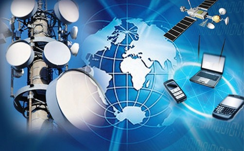

Profesora: Freddy Jimenez
unidades de credito: 5 u/c
código de materia: TLC-35225
salón: piso 3/15
horas a la semana: 5
descripción: La Unidad Curricular Comunicaciones II se ocupa de desarrollar las competencias para el diseño de dispositivos de sistemas de comunicaciones digitales según las leyes físicas de procesamiento y propagación de señales y la correspondiente transmisión de información de manera eficiente, confiable y rápida. Todo ello, basándose en normativas y recomendaciones nacionales e internacionales. Ademas se espera manejar los conceptos básicos relacionados con las comunicaciones digitales: Muestreo, Modulación analógica de pulsos, Modulación por Codificación de Pulsos, Modulación digital de pulsos, Transmisión de pulsos, Codificación, Comunicación de Datos y Protocolos Básicos de Comunicación.
